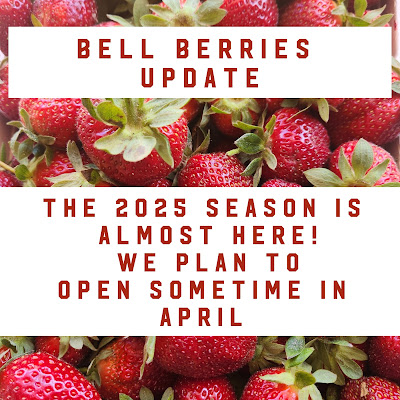
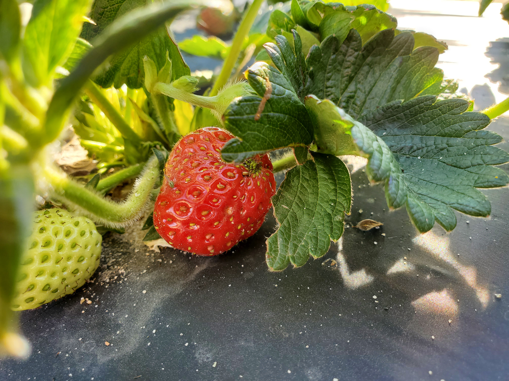

The 2025 strawberry season is almost here! The plants are bearing already, but not enough to sell. They may be bearing enough in around 2 to 4 weeks to finally open!

The strawberry season does not really start when it is hot enough, but when the days are longer. Weather still affects the season bt not as much as thought.See you soon!
